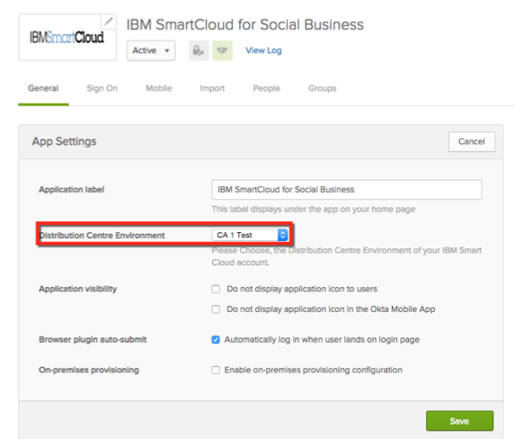

How to Configure SAML 2.0 for IBM Connections Cloud
This setup might fail without parameter values that are customized for your organization. Please use the Okta Administrator Dashboard to add an application and view the values that are specific for your organization.
- Email IBM Connections Cloud at cloudcsg@us.ibm.com and request that they enable SAML. Provide the following information:
- IDP Metadata: Copy and paste the following and then save as an .xml file.
- CustomerID: You can find this from your IBM Connections Cloud Account Settings.
- The Data Center/Environment you are hosted on. You can find this in Okta by selecting the General tab for the IBM Cloud Connections app, then scrolling down to the Distribution Centre Environment field as shown below:

Guidelines for your Data Center/Environment:
https://apps.collabservnext.com, select CA-1 Test
https://apps.na.collabserv.com, select America DC
https://apps.ce.collabserv.com, select Europe DC
https://apps.ap.collabserv.com, select Asia Pacific DC
- Done!
Notes:
IDP-initiated flows are supported.
SP-initiated flows and Just in Time (JIT) provisioning are not supported.